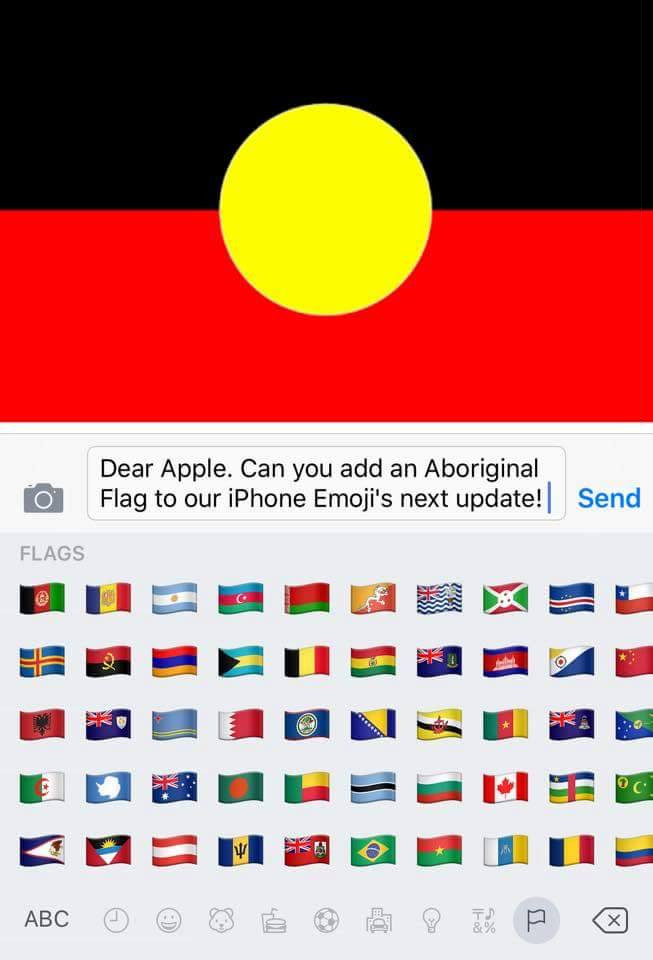
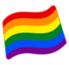

How Flag Emojis Get Decided
Why adding an Indigenous flag is technologically non-trivial

A recent viral post is asking Apple to add the Aboriginal flag to the iPhone emoji keyboard, as an addition to the other flags already there.

The text of the post is:
Can everyone please share this picture! Make it get to Apple! it is the only flag not there
I like activism as much as the next person, but only when it is aimed at the people who can fix the problem. Upon seeing this post, I initially suspected that it was aimed at the wrong people, since Apple do not choose what the set of available emojis is. So I looked up how emojis are decided. My initial guess was that this petition should be aimed at the Unicode standards body. It turns out the flag emojis' encodings and governance are even more complex than other emojis. This means that even the Unicode standards body may not be able to add the Indigenous flag.
Apple do not decide which emojis to include. They simply implement the Unicode standard (ISO/IEC 10646). There is a surprising amount of wiggle room for vendors implementing emojis, but that is still just restricted to minor creative details. For example, are the flags wavy or a perfect rectangle? Is the "gun" an actual gun or a water pistol?
It turns out that the Unicode standard itself does not actually define the list of flags to be included as emojis. This is because the people who design emojis think that they should not bear the politically heavy responsibility of deciding what is a country and what is not. An Aboriginal flag is uncontroversial. However other more controversial proposals could follow. Whether or not Sealand should be legitimised through the creation of a Sealand flag emoji a controversial and politically heavy question. That decision should not be made by a small (and slow) group of typography nerds choosing glyphs and encodings. This is why the Unicode standard does not actually specify the list of flag emojis.
Unlike most other emojis the flags are encoded with reference to another standard, ISO 3166-1. This is the country code standard, which defines that "AU" stands for Australia. However it gets even more complicated, because that standard does not define what a country is, it just maps the codes to the list of countries recognised by the UN.
Here is how that list is decided:
As a general rule, the ISO 3166 maintenance agency does not assign official country code elements to other geopolitical areas or countries that are not member states of the UN.
There are some exceptions, such as states and territories of UN member nations:
However, the ISO 3166 maintenance agency may assign country codes to dependencies of countries that are member states of the UN. To be considered, some criteria, amongst others, include that the area be physically separated from its parent country and outside its territorial waters. Even if all criteria are met, the ISO 3166 maintenance agency may decide not to assign a code element, for example, due to the very limited number of official alpha-2 code elements available.
The nation represented by the Aboriginal flag is not a member of the UN (at least, not a member distinct from the nominal Australian member). It is also not physically separate. Therefore it cannot be added to this list without a change in those rules. So it turns out that implementing the Aboriginal flag emoji is surprisingly complicated.
Option 1
Petition the UN to recognise Indigenous Australia as a sovereign nation distinct from colonial Australia. That is a huge ask politically and legally when the goal is just to have an emoji.
Option 2
Petition the UN to recognise Indigenous Australia as a "subdivision" of colonial Australia. Again the same issues arise.
Option 3
If they really wanted to, Apple could use the "user assigned" namespace in ISO 3166-1 to define a non-standard code. However then when that emoji is viewed on any device which isn't the latest apple device, it would just appear as the letters "XA" (or "XB", "XC" etc) inside circles. Or worse, that second device might already have that custom code assigned, so it would actually appear as the wrong flag. (This is why standards exist in the first place.)
Option 4
Petition the Unicode standards body to implement the Aboriginal flag encoding in a unique way which is completely different to every other national flag. Perhaps a new category could be created for flags which are not UN member flags. An Aboriginal flag is politically uncontroversial. However I'm sure other more controversial proposals would follow, such as the Confederate flag. Such a new category would grant this small (and slow) group of typography nerds the power and responsibility to make political decisions and impose an ideological viewpoint on the whole the world. They do not want to be put in that position.
Option 5
There is precedent for a flag emoji implemented which is not in the UN recognised country list. The rainbow flag emoji!

It turns out that this emoji is also not a direct definition in the Unicode standard. Instead it uses an "emoji special width joiner sequence". It takes a white flag shape, and a rainbow, and overlaps them using a zero width joiner character. The main vendors have hard coded this sequence to render with horizontal stripes instead of a semicircle. However the sequence is deliberately designed so that older platforms can still render something legible.

I do not know much about the implementation of multi-character glyphs. I suspect that if you could find an emoji that happens to be a yellow circle, and another which happens to be half a red rectangle, and another which happens to be half a black rectangle, you might be able to join them in this way. If such component emojis already exist then you could join them up today. You wouldn't need to wait for a slow standards body. However I doubt such component emojis exist. (Why would anyone need half a red rectangle as an emoji?)
So it turns out that this is surprisingly complicated. A petition to Apple is probably not going to be successful.